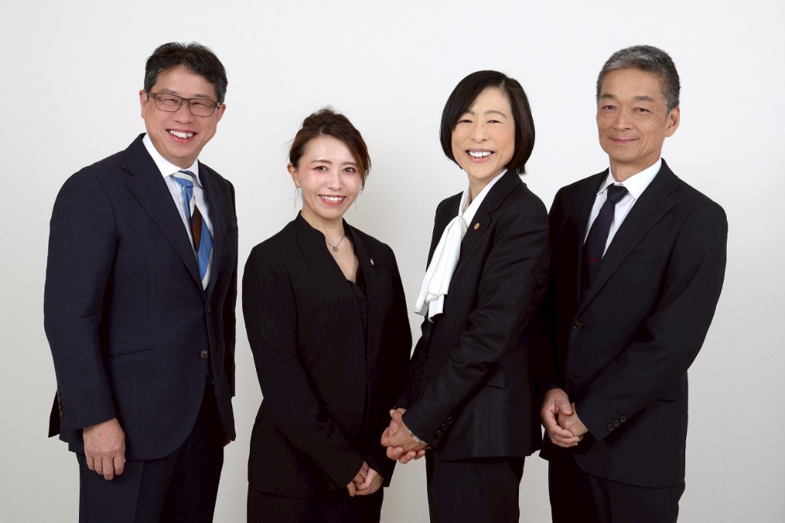

Mito, IbarakiFinance / Insurance
財務と保険で、黒字が続く会社へ。
- 01 財務コンサルティング Consulting
- 02 保険の適正化 Insurance
決算書を読む 銀行に出す 毎月の資金繰り
財務と保険の両面から、黒字が続く仕組みをつくる。
無料 初回のご相談と「財務分析診断書」の作成は無料です
宮田 久雄Hisao Miyata 株式会社宮田財務｜財務コンサルタント／ファイナンシャルプランナー（AFP）・保険乗合代理店
自己紹介
代表 宮田 久雄
- Name
- 宮田 久雄（みやた ひさお）
- Company
- 株式会社宮田財務
- Area
- 茨城県水戸市（オンライン対応・全国可）
- Career
- 郵便局に21年勤務後、2004年に独立。保険の乗合代理店として22年、家計から法人まで相談を受けてきました
- Now
- 54歳から財務を学び直し、中小企業の財務支援へ。現在18社を継続支援中、年間10社の黒字転換を目標に伴走しています
- License
- 経営革新等支援機関認定（第66号認定）／AFP・2級FP技能士・上級BCP診断士・住宅ローンアドバイザー

Philosophy
経営理念
私たちは知識を知恵に変えて、
日本の中小企業がお金に困らない組織を創造します
できること
-
Diagnosis
財務分析診断書の作成初回無料
決算書と試算表を読み解き、自社の現在地が1枚でわかる診断書をお作りします。初回は無料でお渡ししています。
-
Cash flow
資金繰り改善支援
正常運転資金を計算し、借入と手元資金のバランスを適正化します。銀行に何をどう伝えるかまで一緒に組み立てます。
-
Profit
利益再編支援
固定費と利益構造を洗い直し、どこを削りどこに残すかを整理します。数字が翌月の行動に変わるところまで伴走します。
-
Succession
事業承継・相続の支援
会社と家族の「その後」を見据え、承継の段取りと資金の準備を整理します。BCPの観点からも助言します。
-
Insurance
保険の適正化（火災・生命）
加入中の証券内容を確認し、補償の過不足を整理します。特定の会社に属さない乗合代理店として、強引な提案はしません。
黒字化本気塾
FP宮田の楽しすぎる勉強会
経営者のための「つぶれない会社づくり」
健全な経営で着目すべきはキャッシュフローです。損益計算書では利益が出ているのに現金がなく、納税資金を借り入れる——中小企業ではよくある事態です。手元の現金の動きにも注意を払い、現金で困らない会社づくりを学びます。
支援事例
守秘義務のため社名は伏せ、
業種・規模・支援内容で記載しています。
よくある質問
初回のご相談と「財務分析診断書」の作成は無料です。継続してのコンサルティング契約は、会社の規模と支援範囲によって変わりますので、診断書をご覧いただいたうえでお見積りします。
財務分析、資金繰り改善、利益再編、事業承継、保険の適正化まで対応します。記帳代行と税務申告は行っていませんので、顧問税理士の先生と連携しながら進めます。
財務分析診断書は初回のヒアリング後にお渡しします。数字の見え方が変わり手元資金が動き出すまでは、月次で3ヶ月〜1年ほど継続いただくのが目安です。
大丈夫です。どちらか一方でも承ります。特定の保険会社の傘下ではない独立した事務所ですので、無理に商品をお勧めすることはありません。
可能です。オンラインMTGとチャットで全国対応しています。銀行訪問への同行など対面が必要な場面はご相談ください。
最新の発信
FacebookとYouTubeの、いちばん新しい投稿です。更新されると、このページにも反映されます。
YouTube社長の決算書チャンネル
最新の動画を読み込んでいます…